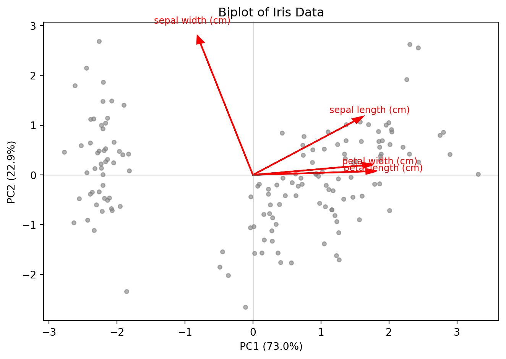

Code
import numpy as np
import matplotlib.pyplot as plt
from sklearn.decomposition import PCA
from sklearn.preprocessing import StandardScaler
from sklearn.datasets import load_iris
iris = load_iris()
X_iris = StandardScaler().fit_transform(iris.data)
pca_iris = PCA(n_components=2).fit(X_iris)
scores = pca_iris.transform(X_iris)
loadings = pca_iris.components_.T # (4, 2)
fig, ax = plt.subplots(figsize=(7, 5))
ax.scatter(scores[:, 0], scores[:, 1], s=15, color="gray", alpha=0.6)
scale = np.abs(scores).max() / np.abs(loadings).max() * 0.8
for i, name in enumerate(iris.feature_names):
ax.arrow(0, 0, loadings[i, 0] * scale, loadings[i, 1] * scale,
color="red", head_width=0.1, linewidth=1.5)
ax.text(loadings[i, 0] * scale * 1.15, loadings[i, 1] * scale * 1.15,
name, color="red", fontsize=9, ha="center")
ax.set_xlabel(f"PC1 ({pca_iris.explained_variance_ratio_[0]:.1%})")
ax.set_ylabel(f"PC2 ({pca_iris.explained_variance_ratio_[1]:.1%})")
ax.set_title("Biplot of Iris Data")
ax.axhline(0, color="gray", linewidth=0.5)
ax.axvline(0, color="gray", linewidth=0.5)
plt.tight_layout()
plt.show()